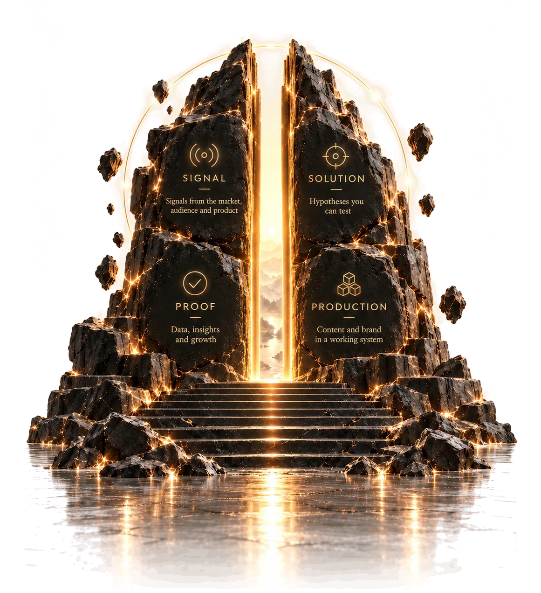
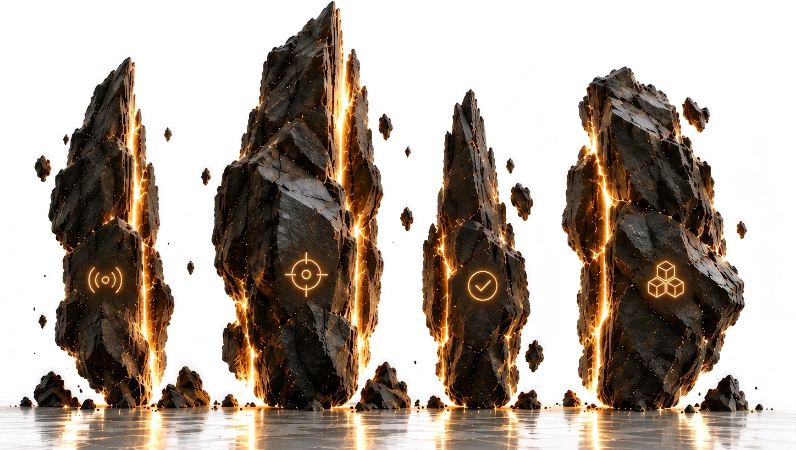

Creative Director · Arseniy Okhotin
From a new niche
to steady sales.
Easy.
I get up to speed in a new niche fast, find the formats that work and grow the business numbers. I set up research, production and analytics on AI, and from there they run on their own.
Idea makerSystems builderCross-disciplinaryAI pro-user
One loop
for everything

Same product,
different pitch
01 Case
RAWMID · brand platform and visual system
Brand: from idea to clubs
Built the brand platform: idea, mission, values, audience research. Tied it to the product logic, the brand language and buyer groups, and to how content speaks to each group. Illustrated the visual language and scaled it across packaging, merch and marketing materials.
Home-appliance brand, 35+ SKUs, 7 channels, 10+ products and 10 campaigns a year. Product-card CTR 1.7% → 3.4%, engagement on AI visuals ×1.5–2.
Interest clubs (concept): RAW · FIT · VEG · GARDEN · FAMILY and more
Early brand identities · Behance
02 System
How a decision gets made
Demo: one goal from signal to standard. Each step is its own Notion database, and the links between them are live. Names are replaced with numbers, so what you see is the mechanics.
Metric collection runs end to end on one social channel, from post to goal. The same setup is ready for YouTube and marketplaces.
Standard processes are written up as skills for the team and AI agents, and updated after every task.
Real databases,
not a mockup
03 Cycle
One turn: from gap to standard
Six stages, each with its own Notion bases and live links between them. The last step returns knowledge to the start: patterns into research, formats into the bet. Automation runs underneath all of it.
- 01
Gap
Visible as a number, not an opinion.
- Goals
- Key results
- Products
- Metrics
- 02
Research
Grounds come before the bet.
- Studies
- Competitors and their strategies
- Archetypes
- Jobs to be done, CJM
- Patterns
- 03
Bet
One mechanism tested cleanly.
- Hypotheses
- Concepts
- Format candidates
- 04
Production
The system holds the deadlines.
- Projects
- Tasks
- Content plan
- Releases
- 05
Proof
Control and variant measured together.
- Facts
- Evidence
- Guardrail metrics
- 06
Standard
What holds becomes the norm.
- Conclusions and limits
- Formats
- Skills for the team and agents
AutomationNotion Worker on Cloudflare plus agents: fact collection, nightly runs, base updates — across all six steps at once.
Measured on one auto-collection pass, September 2026.
The loop closes
here
The database counts,
not me
04 Team
My standard became the team’s workflow
3.5 years leading the creative team of a home-appliance brand: design, photo, video, SMM and work with marketing.
05 Niche
Signal.
Solution.
Proof.
Production.
The four stones the gate is built from. I grew each of them over years and bring them into any new niche.
The year
a layer appeared

-
I research
- 2022 Knowledge base: ideas, materials, references
- 2025 Audiences and buyer jobs
- 2025 Competitor analysis
-
I invent
- 2024 RAWMID brand platform
- 2025 Hypotheses, experiments, formats
- 2026 Goals and key results
-
I test
- 2025 Ozon and WB product cards: CTR doubled
- 2025 Norms for typical tasks: hours and revisions
- 2026 Metrics collected automatically
-
I produce
- 2011 Identity, packaging, social, web
- 2019 Art direction
- 2022 In-house team, work in Notion
- 2023 AI in production
- 2024 Guides and a shooting standard
- 2025 Creative director
From open
data
A week to break down an unfamiliar market
Competitors’ topics, formats, ads and channels. The output is a map of standard tasks the team can start on right away.
Two or three niche breakdowns go here: market, gap, a hypothesis with a number. In progress.
06 Contact
Looking for a creative director role
Consumer brands, e-commerce, marketplaces. I’ll start with a breakdown of your niche.